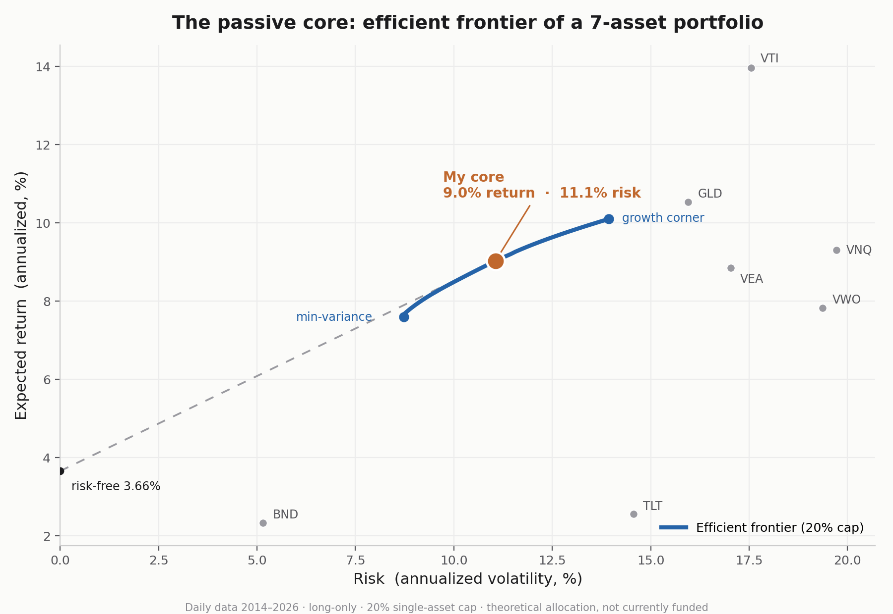

How I'd Run My Own Firm
Most "my investment philosophy" posts written by someone my age are borrowed confidence. A sixteen-year-old quotes Buffett, name-drops three strategies he read about that week, and calls it a methodology. I've read a lot of them. None of them survive a single real question.
So I'm doing the opposite. The idea for this came from Daniel Heidel, a CFP I've been shadowing this summer, who told me to stop just reading about investing and actually define how I'd run money if it were mine. So I did. What follows is the framework I'd run if I were starting my own firm, built from the ground up out of three distinctions about how the industry works and two tools I wrote the code for myself. I'm going to tell you exactly what I can defend and exactly what I can't, because the moment I pretend to know something I don't, the whole thing is worthless.
Here's the honest starting point. I have no edge yet. No capital deployed. What I have is a method I can explain and a discipline I'm building. If that sounds modest, good. Modest and true beats impressive and fake every time, and that difference is the entire point of this post.
The map
Before I tell you how I'd invest, I have to show you I know where I'd be standing. The whole industry sorts onto three axes. Every firm, every strategy, every job you've heard of is just a coordinate in that space.
The first axis is who you work for: sell side or buy side. The sell side advises and transacts. Banks running M&A deals, trading desks making markets. They get paid for the activity, a fee or a spread, win or lose. The buy side allocates real capital and gets paid for being right. Hedge funds, private equity, anyone managing money to earn a return. One side is paid to do the work, the other is paid for the outcome. As an investor, I'm buy side. Full stop. I'm not advising anyone or collecting a fee, I'm putting capital to work and trying to be right, which is the literal definition.
The second axis is where you play: public markets or private. Public is liquid and transparent. I can buy or sell an index fund in seconds at a price everyone sees. Private is locked and opaque, a stake that can tie your money up for seven to ten years, valued by a model instead of a live price. You get paid an illiquidity premium for accepting that lock-up, but only if the investment beats what you'd have earned staying liquid. "Positive" isn't the bar. "Beat the alternative" is. For me this axis isn't even a choice, because private markets legally require you to be an accredited investor, which means wealth I don't have yet. So I'm in public markets, which is exactly where I should be learning anyway.
The third axis is how you play: passive or active. Passive means owning the whole market cheaply and taking its return. Active means trying to beat it. Here's the uncomfortable fact: 80 to 90% of professional active managers lose to a simple index fund over the long run, after fees. Full-time pros with teams and terminals, and most of them can't beat a fund that does nothing but own everything. Beating the market is close to zero-sum before fees and negative after them. So passive is the rational default. Later I'll explain why I still default to it for my own money while wanting a career in the most active corner of the entire field.
That's the map. Buy side, public markets, passive by default. Three coordinates, and every one of them is a choice I can defend.
The passive core
Every portfolio I'd build has two layers: a passive core that holds most of the money, and an active satellite that holds a little. This section is the core. It's the boring, foundational part, and that's the point. The core's job isn't to be clever. It's to be diversified, cheap, and durable.
To build it I used a tool I wrote myself, a Markowitz mean-variance optimizer in Python, pulling real daily price data with yfinance and running the optimization with scipy. I fed it seven low-cost ETFs chosen to cover different corners of the market: US stocks (VTI), developed international (VEA), emerging markets (VWO), US bonds (BND), long-term Treasuries (TLT), gold (GLD), and US real estate (VNQ). The reason for spreading across asset classes is correlation. Gold has almost zero correlation to US stocks, and long Treasuries are actually negatively correlated to them. Those are the assets that lower a portfolio's risk without killing its return, which is the closest thing to a free lunch that exists in investing.
Then the tool tried to teach me a lesson about itself.
The first time I ran it unconstrained, asking only for the best risk-adjusted portfolio, it told me to put 56% in US stocks and 44% in gold and to throw away the other five assets entirely. No bonds, no international, nothing. That is not a diversified core. It's a concentrated two-asset bet, and it walked straight into the most famous flaw in Markowitz optimization. The technical nickname for naive mean-variance optimization is an "error maximizer." It treats past returns as if they're guaranteed to repeat, so it piles into whatever looked best in the rearview mirror. Gold returned about 10.5% a year over this window because it went on a massive recent run, and the math naively assumed it would keep doing that forever. Nobody sane believes gold's expected return from here is 10.5%. The optimizer didn't know that. It just extrapolated.
The useful skill here isn't running the optimizer. Anyone can run it. The skill is looking at "56% stocks, 44% gold" and recognizing the output is fragile instead of treating it as gospel.
So I constrained it. I capped any single asset at 20%, because risking more than a fifth of a portfolio on one asset whose future is genuinely unknown is reckless. With that cap in place, the optimizer can't make concentrated bets anymore. It has to spread out, which is the entire point of a core. The portfolio it produced: VTI 20%, VEA 20%, VNQ 20%, GLD 20%, TLT 14%, BND 6%. Roughly 60% stocks, 20% gold, and 20% bonds, for an expected return of 9.0% at 11.1% volatility.
I chose this specific point on the curve deliberately. I'm sixteen, which means I have decades of runway and can absorb volatility a retiree can't, and that argues for tilting toward stocks, which I did. But I deliberately kept 20% in bonds and Treasuries as ballast, because the real danger of a volatile portfolio isn't the volatility. It's panic-selling during a crash. The ballast softens the drops and makes it easier to hold the line, which protects the one real edge I have. More on that in a minute.

One last thing the chart shows, and it's my favorite part. Look at where each individual asset sits relative to the curve. Every one of them, on its own, is worse: either more risk for the same return, or less return for the same risk. Not a single asset, held by itself, beats the diversified blend. That gap between the lonely dots and the curve is the free lunch, and it's the entire reason a core is built from many things instead of one.
Full honesty: I don't hold this portfolio. No money is in it. This is the allocation my method produces, not a book I'm running. I could have written this section to sound like I trade it every day. I didn't, because the second I fake that, nothing else I've said is worth reading.
The active satellite
If the core is the boring 80% that just holds the market, the satellite is the small slice where I'm allowed to try to beat it. Mine sits around 15 to 20% of the portfolio, and the size is the discipline. The core is big because I trust diversification. The satellite is small because I do not yet trust my own ability to outperform, and pretending otherwise would be exactly the fakery this whole post is against.
The satellite is where active ideas live: specific, testable signals rather than vibes. And the rule that governs it is simple. I do not deploy capital behind an idea until I have tested whether it actually works. No gut feelings, no "this stock feels cheap." A signal earns a place in the satellite only after the data says it has a real, repeatable effect.
I built one of these already. I took a well-known technical signal, the golden cross, and instead of assuming it worked because traders talk about it, I backtested it on crude oil to see whether it actually produced an edge or just looked good in hindsight. That backtest is its own post ("The Rule Doesn't Care What You Want"), but the principle is what matters here: a backtest is a luck detector. It's the tool that separates "I got lucky on a few trades" from "this signal beats chance often enough to bet on." Being right once is a coin flip. Being right repeatably, in a way you can measure and reproduce, is the only thing that counts as edge.
That's the whole logic of the satellite. Small, because I'm honest about my limits. Tested, because untested conviction is just gambling with extra steps. It's the lab where I try to manufacture an edge, knowing most experiments will fail, and sizing it so that when they do, the core carries me anyway.
The edge
Here's the question I promised to answer back at the start: how can passive be the smart default for my own money while I want to spend my career in active management, the exact thing that usually loses? The answer is one word, and it's the most important word in investing. Edge.
Edge is a specific advantage the market hasn't already priced in. It isn't being smart. Everyone in this field is smart, that's the entry fee, not the advantage. It isn't being relentless either. My first instinct was to say my edge is that I outwork everyone and I'll do whatever it takes. It isn't. Every single person competing for these seats would say the exact same thing, and a trait everyone claims is not an advantage over anyone. Drive is the fuel that lets you build an edge. It is not the edge.
There are only three real places an edge comes from. Informational: you know something the market doesn't, through faster or deeper information. Analytical: you and everyone else have the same information, but you interpret it better than they do. Behavioral: you can act in ways others can't or won't, like holding through a crash while everyone around you panic-sells.
Now I'll be honest about which of those I actually have, because that honesty is most of the reason this post exists. Informational edge? No. I cannot out-research Goldman Sachs, and I never will from my bedroom. Analytical edge? Not yet. That takes years of study I haven't done. But behavioral edge is the one genuinely available to a sixteen-year-old right now. The discipline to follow a tested rule when my emotions are screaming to break it costs nothing but self-control, and self-control is something I can build today.
So that's my honest edge. Not informational, not analytical, behavioral. And I've already started practicing it. It's the whole reason I backtest my signals instead of trusting my gut, and then force myself to follow them even when the rule says something uncomfortable. My crude oil post is called "The Rule Doesn't Care What You Want" for exactly this reason. The rule says hold. The gut says sell. The edge is doing what the rule says.
Now the paradox dissolves. Passive is right for my money because I'm edgeless today, and without an edge, active investing is a guaranteed loser after fees. A career in active management is right because the entire job is building the informational and analytical edges I don't have yet, and the people who win at it are the 10% who actually have one, not the 90% who charge for an edge that doesn't exist. I default to passive precisely because I'm honest about not having an edge. The career is the decades-long project of earning one.
What this commits me to
A methodology is worthless if it only exists on a good day. The real test is what it forces me to do when I don't want to. So here's what this one actually commits me to.
It commits me to a boring core I won't tinker with, because the diversification is the point and my clever instincts are usually noise. It commits me to a small satellite, sized so that when my active ideas fail, and most will, the failure can't sink me. It commits me to testing every signal before a dollar goes behind it, because untested conviction is just gambling that learned to dress itself up. And it commits me to being honest, in public, about having no edge yet, when the easier move would be to sound like I do.
But underneath all of it is one rule, and every other rule is just a way of protecting it: follow the tested signal when your gut is screaming to break it. That's the behavioral edge, and it's the only one I have right now. The market doesn't reward the person who wants it the most. It rewards the person who can stay disciplined when discipline is the hardest thing in the room. I'm sixteen, I have no money in the market yet, and I don't have an edge. What I have is a method I can defend and the discipline to build the rest. That's the whole firm. The rest is just time.